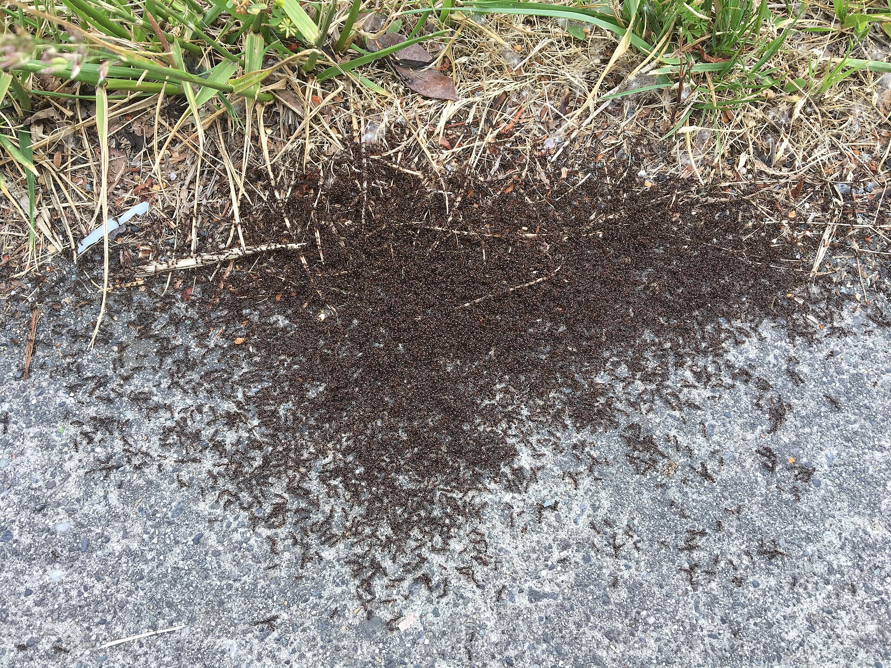

01
Complexity Science · Self-Organization
Stigmergy
/ˈstɪɡmərdʒi/ — coordination through traces left in the environment.
Ants build structures no single ant designed and no ant supervises. Each one drops a chemical trace, and the trace tells the next ant what to do. No boss. No blueprint. The environment itself carries the plan. Termite cathedrals, Wikipedia, and open markets all run on the same trick.
The word was coined in 1959 by biologist Pierre-Paul Grassé, from the Greek stigma (mark) and ergon (work): the work itself leaves the mark that guides the next work.
Why I brought it to youIt is quietly the operating principle of both of your worlds at once. Agentic AI is agents coordinating through shared state, not a manager. GGP is a coalition that runs on signals and gratitude, not a central command or scarcity. One idea unifies your day job and your AI future.
